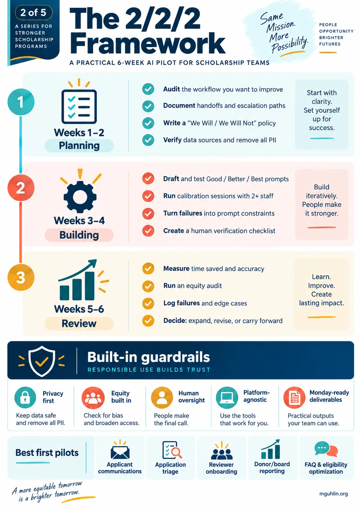
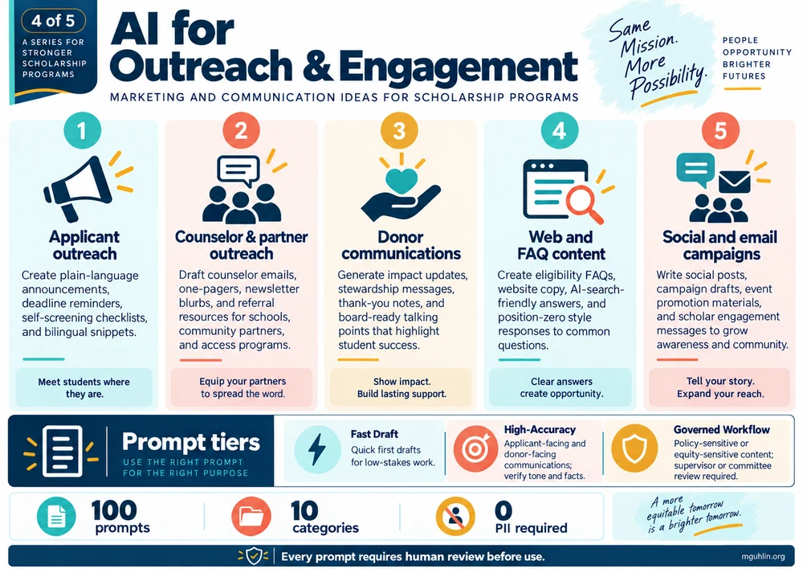
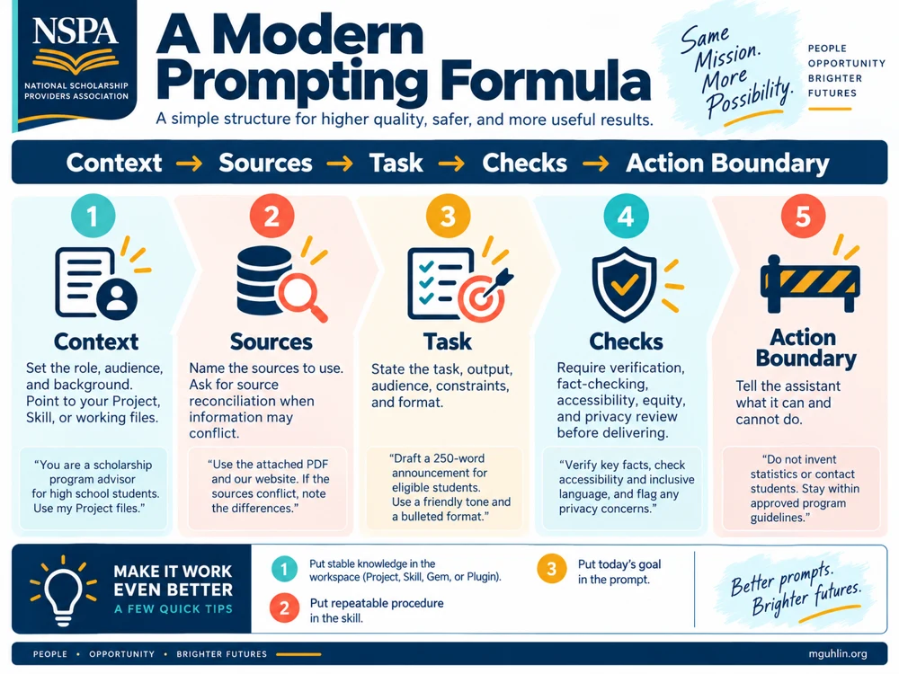
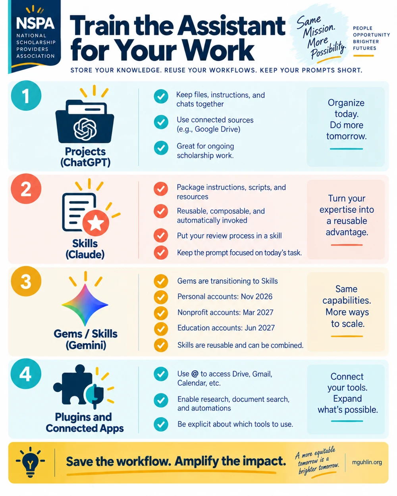
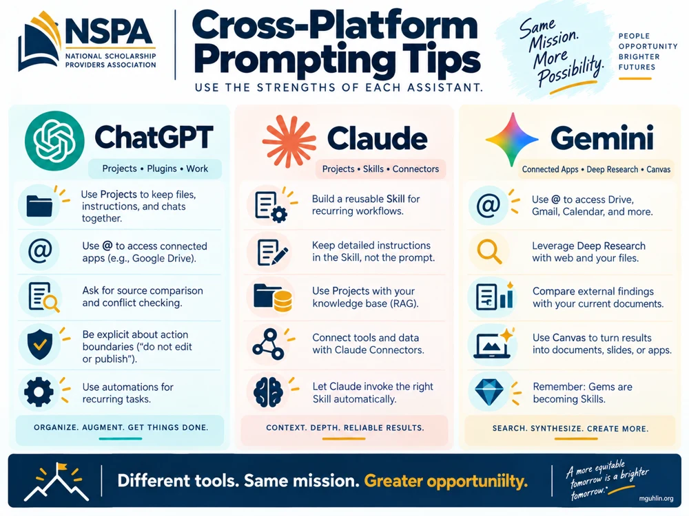
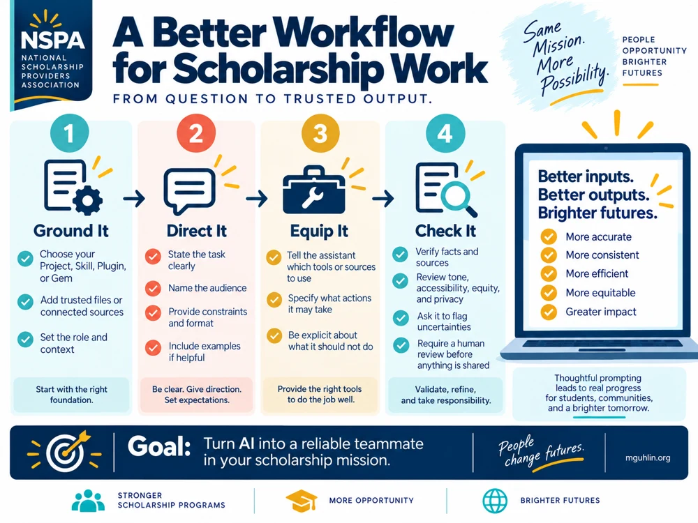

Gen AI for Scholarship Providers
Five ways to strengthen scholarship service: applicant communications, application triage, reviewer support, donor and board reporting, and outreach. Keep PII out of prompts, verify facts, and retain human oversight.
The ten original infographic downloads are available here. Selected practice guides and references accompany the core workshop. The complete public library remains at https://mguhlin.github.io/nspa/ for further exploration when you reconnect.
Visual guides for scholarship teams
Explore ten visual guides to planning, prompting, outreach, and ethical decisions. Open an image at full size or download it for your team.
Five ways to strengthen scholarship service: applicant communications, application triage, reviewer support, donor and board reporting, and outreach. Keep PII out of prompts, verify facts, and retain human oversight.

Plan a six-week scholarship-team AI pilot: two weeks of planning, two of building, and two of review. Includes privacy, equity, human oversight, and practical first-pilot ideas.

Start with a real scenario, build Good / Better / Best prompt tiers, run and rate the output, then debrief and revise. Includes a C.A.R.E. check and scholarship-office workflow ideas.

Ideas for applicant, counselor, partner, and donor outreach; web and FAQ content; and social and email campaigns. Match prompt tiers to the task and review every output before use.

Seven ethical decision steps, from engaging stakeholders to learning from outcomes. Keep applicant PII out of prompts, retain human award decisions, test for bias, and set a review date.

Add context, use connected tools, build reusable workflows, and review results to make scholarship work more useful.

Build prompts with context, sources, a task, checks, and an action boundary; improve results through practical prompt tiers.

Compare reusable Projects, Skills, Gems, and connected apps for organizing scholarship-team instructions and resources.

A visual comparison of ChatGPT, Claude, and Gemini approaches to reusable instructions, sources, tools, and checking results.

Grow a workflow from context and instructions to connected sources, suitable tools, and checked outputs.
Optional practice labs · Optional readiness checklist · External addresses for later reading